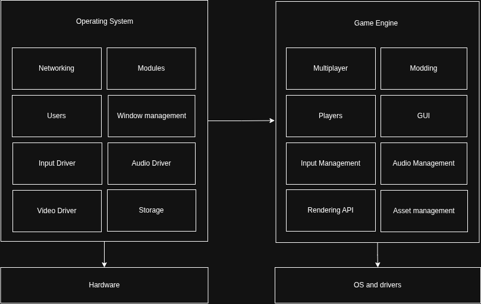
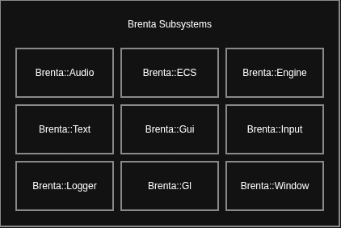

THIS DOCUMENT IS A DRAFT AND IT IS NOT COMPLETE
What is a game engine?
The line between a game / application and its engine is not something inherently fixed, people have different needs and they may think differently about it. This is what fundamentally drives the design of their engines. AAA studios may want a "big engine" that provides many advanced features out of the box, I would place Unreal Engine and Unity in this category. Some other smaller studios or individual recreational programmers may want a lighter platform that is easier to understand and to modify, think Raylib and Love2D.
Regardless, game engines are usually complex pieces of software. They provide a platform to define logic, render graphics, and access system resources like audio and input, as well as providing a cross-platform abstraction to the developer.
Brenta-Engine is more positioned towards the "big-engine" category. Here is an high level overview of the major classes that are used in the engine:
Brenta's development has been more iterative than meticulously designed. I rewrote huge parts of the engine many many times, to the point where I am not scared to do big refactoring anymore - that is just routine - and I know I am deemed to repeat this process again. But through these many refactoring, the API reached a point where all objects work well together and you can reason about them through what I call the "architecture" or "design" of the engine. This is what I aim to describe in this documents.
I wanted to write my own graphics engine primarily because I was curious to understand how these big systems are designed and implemented, and as a programming exercise / learning experience. The more I learned about graphics the more I became fascinated and interested in the topic.
When I began this project in July 2024 I was really confused with using OpenGL and C++, it took me a while to develop a decent mental model. I was at my second year of university and I did not have any major programming experience, but I pushed through it and hacked some things. I became obsessed with the project for the entire summer, which led to the release of Brenta v1.0.0. I did not fully understand what I was doing and its design is more of a hack (and the code clearly shows it). I moved on to other projects afterwards.
I picked up the project in December 2025, I was a more experienced developer and I took up the challenge again. Here I fully rewrote every part of the engine, introducing most of the core abstractions that the engine uses. I found out that writing a game engine has a lot of overlap with writing an operating system (which is another area I am really interested in). You are working with audio, files, video, network and the GPU. A game engine is essentially a realtime system since you need to compute logic and render the frame in under 16ms to run at 60 FPS, hence you have to understand how the CPU and memory works in order to optimize it.

One of the first architectural decision I made was the introduction
of the Sybsystem. Brenta engine is divided in subsystems,
each one has different responsibilities and provides certain
abstractions. The most important subsystems are the Rendering, which
manages things like the scene and render commands, and the Entity
Component System (ECS) which manages game logic.

The renderer provides a set of abstraction for working with geometry and lights in order to render a frame on the screen (or to a framebuffer).
The actual rendering algorithm deserves its own book. There are many rendering techniques available, briefly the most popular ones are the following:
uv coordinates).
Given a triangle, after projecting it to the screen, the renderer
(whether software or hardware accelerated) will iterate over discrete
pixels inside the triangle and color them based on a coloring algorithm
or program (fragment shader). This "projection" is achieved by
multiplying together three matrices: the model or
world matrix which translates a vertex to its position in
world space, the view matrix which shift and rotates the
world based on the camera position (If the camera moves 5 feet to the
right, it’s mathematically the same as moving the entire world 5 feet to
the left), and projection matrix which applies perspective
and field-of-view; this ultimately maps the vertices inside a cube
called the Canonical Cube where the GPU can work with.Another huge topic is lighting. Brenta implements the Phong reflection model but provides the abstractions necessary to integrate other methods.
There are many ways to define a scene. Brenta supports both the node-graph architecture, commonly used in Godot, Unity and Unreal, and the ECS (Entity Component System) architecture like in Bevy.
The scene is a tree of nodes where each node has a transform, and may have a model, a directional light, any number of point lights and other nodes (children). All transforms are relative to the transform of their parent; when a node is updated, all its children are updated too.

Here is an high-level picture that shows the main classes used in the scene graph, where arrows going down mean the parent contains one or more children:

The Entity Component System architecture is used to manage all logic of a videogame. Check out viotecs for more information.